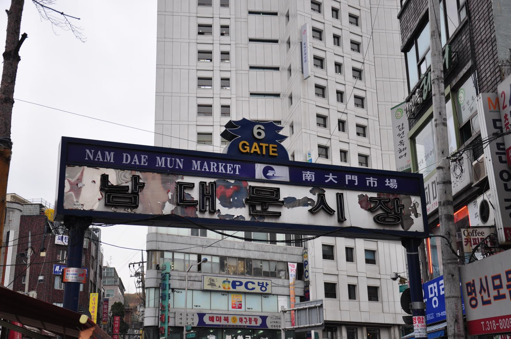

Places to Visit in South Korea
Discover the different places you can visit in South Korea! Toggle using the buttons to match the cities you wish and/or plan on visiting!

경복궁 (Gyeongbokgung Palace)
명동 (Myeongdong)

남대문 시장 (Namedaemun Market)
해운대해수욕장 (Haeundae Beach)

태종대 (Taejongdae)
자갈치시장 (Jaglachi Market)
동화사 (Donghwa Temple)
해인사 (Haeinsa)

두류공원 (Duryu park)

월미도 공원 (Wolmido Park)
자유 공원 (Jayu Park)

송도 센트럴파크 (Songdo Central Park)
장생포 고래박물관
(JangSaengPo Whale Museum)

태화광 국가정원
(Taehwagang National Garden)
대왕암공원 (Daewangam Park)